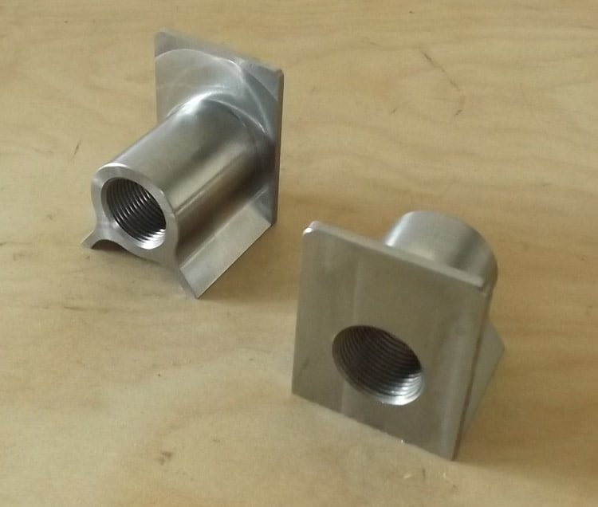
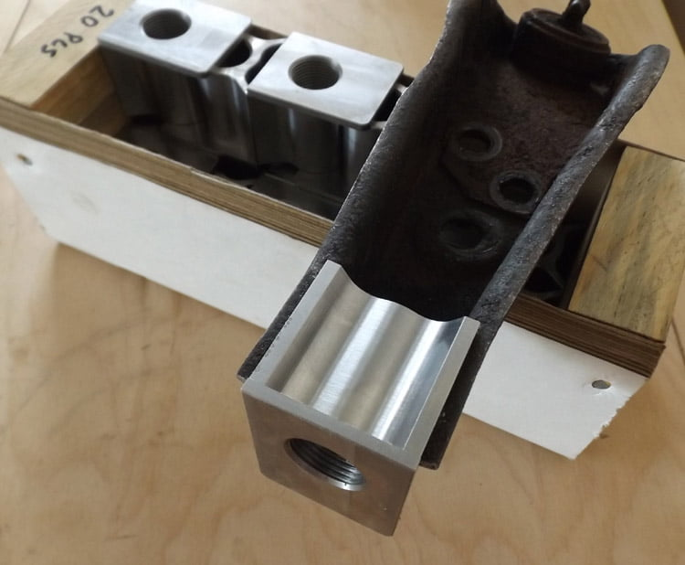
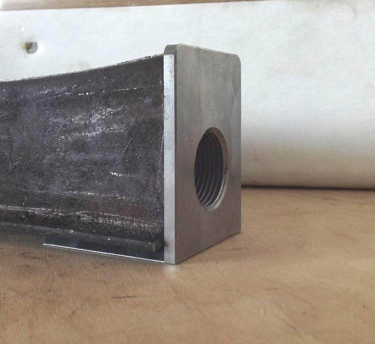
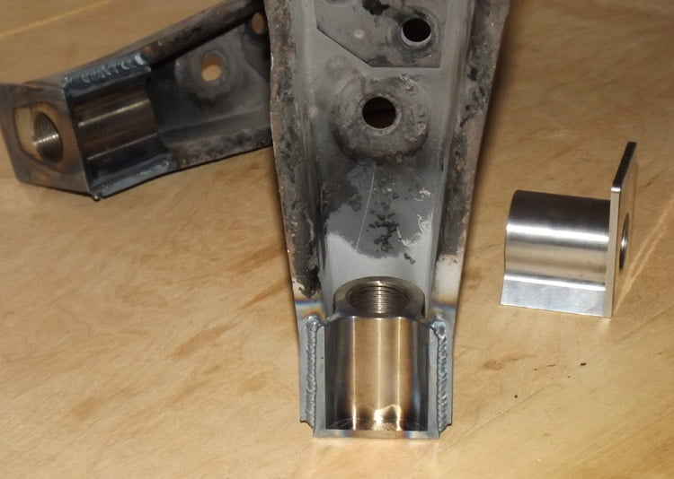
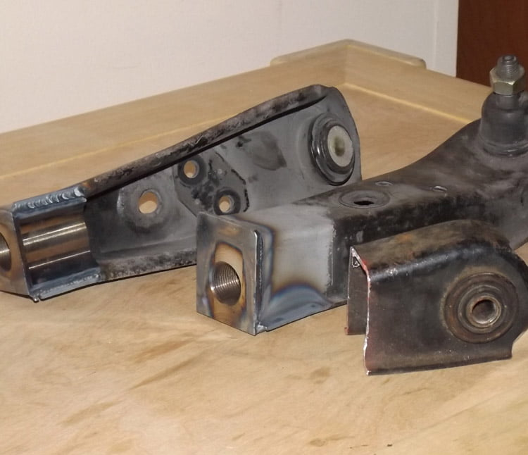

-
For those who haven't seen my fb post… these are going to be available in about a week as a diy kit, OR by welding service
Still waiting on exact costs for a final price, but
The kit will include:
- 2 weld-in blocks
- 2 double threaded adjuster sleeves
- 2 jam screws
- 2 jam nuts
- 4 rodend spacers
- 2 rodends**





** possibly optional, if I include them, they will be cromoly, nylon injected rodends -
I like it.Feedback- viewtopic.php?f=18&t=19840

-
Looks great man!
1985 300ZX Turbo GLL ^Click for log^
Originally posted by nater86zx -
Techno Toy Tuning should have entirely brand new control arms available soon.- VG30DET (HE341) 86 300ZX - 1982 280ZX Turbo - Headered NA 1986 300ZX 2+2 - 2000 Xterra - -
Well… any updates on that?Feedback- viewtopic.php?f=18&t=19840
-
I'm going to order a bunch of rodends tomorrow, should have those in end of next week, then I will show off the completed product, and supply andrew with a batch for his welding service…
Final price of the kit will be:
- $170-180USD unwelded, plus shipping
- $240-250USD welded, plus shipping, plus core -
I have to say this is one of the more sorted out products I have seen you put out.
The fact that they look like they are machined from a single piece of block is impressive. Bottom chamfers allowing for good weld penetration is also a nice touch.
This could be my camber resolution for the 86, and many other people running spring/strut combinations.86na - BlueZ
Shiro #366 - Kouki Monster
85t - Mr Tickles -
Thanks, they are machined from a single piece hah
Yea I wanted an elegant conversion solution that's more or less idiot-proof, I frankly didn't like the battleversion style conversion with plates and having to weld inside the cavity etc… this adds strength, easy access to all the weld areas, and lots of nice angles for the weld itself
In this case the flange and wings will tell you in mockup if you cut everything properly (I used a sawzall with a demolition blade, that red dust you see) -
Wow very good looking kit. Forgive the ignorant question (I don't want to make poor assumptions), but what kind of benefits does this have over stock or stock w/ poly bushing? -
Well, funny you ask. Other than the inherit benefits from the limited amount of flex reduction (from polymer) and added noise this will allow you to dial in additional camber and/or increased track width depending on if you have adjustable top plates.
The entire buzz in which I do not see a solution for is the sway bar mounts. The entire control arm is extending, yet the sway bar stays the same length. So either adjustable sway bar endlinks need to be sorted out (which there may, but none that I can recall) or the sway bar needs to be lengthened (horrible option).
I mean there is stock limitations in which the arms can be lengthened which should not have any effects on OEM style endlinks but I have not seen any information (in which measurements should be taken in increments of camber assuming no top plate adjustments).
It should be without saying, you need adjustable tension rods.
I am not trying to beat up on Paul, but I see the ignorance from all corners of this modification from everyone.86na - BlueZ
Shiro #366 - Kouki Monster
85t - Mr Tickles -
To expand upon the benefits however
For people looking to run mad steering angle track width can be increased with the addition of camber plates on top. This will fix the wheel to frame issue that can happen with increased angle.
ie drift car setup here - observe
With every advancement in modification its really one step forward and 2 steps back. For people like me (Tokico HP/eibach) who would like -2 degrees of camber up front and are limited by the OEM top hat these, or Paul's offset BSS or Russ's Version 2 BSS will accomplish.
Most people applications will be sufficed by either Ver2 BSS or Paul's offset BSS if they do not have coilovers already. The 5% that actual drift and will benefit are smart enough to realize all involved. The other 50% mad tight race car builds need this to add inches to man hood.
Realistically to avoid such messes and really resolve 2 birds with one stone is to extend the LCAs after the tension rod mounts, thus leaving the Sway bar and tension rod mounting orientation alone. One can also add a scallop to allow modified steering knuckle/tie rod to maximize angle (assuming people have already offset the steering rack so not to overcenter/lock or add adjustable stop to prevent). Box it it to add strength...............
Sorry Paul on muddying up your thread. This is a soap box speech I have been wanting to give a while since no one else can really look past the "mad tight yo I need this" adjustable LCAs I have been seeing pop up.86na - BlueZ
Shiro #366 - Kouki Monster
85t - Mr Tickles -
So the main advantage of this for camber over, say, the ASCO camber plates is that while top plates are generally fixed-increment adjustments, most designs for adjustable LCAs can be dialed in to exactly what you (think) you want. Correct? -
Yes, camber to a certain extent would be the #1 benefit. You can read the others in my rant above, but at least do so drinking a beer.Originally posted by FrozenZ View Post
I like ASCO, I like their camber plates, but they do not really work well. The z31 top spring perch is huge and is the limiting factor with camber adjustment. It will hit the strut tower before any real gains (I think Nissanegg measure 1 degree?). I know he made some other modifications with the hardware to gain some more. To take full advantage you need to reduce the spring diameter and hat diameter… which will cause you to weld a new spring perch on the strut tube, at which case you might as well go with Ground Control sleeves........ see how it snow balls?
Simple way to gain camber with OEM strut/spring combo
1) GE's offset BSS
2) Russ's Ver.2 BSS
3) Adjustable LCA*86na - BlueZ
Shiro #366 - Kouki Monster
85t - Mr Tickles -
I think this needs an answer, that is, compatible rodend AND balljoint based endlinks are available for many vehicles, take the 350z's with the 2 balljoint style, one rotated by 90*, to use it you only need a simple L bracket bolted to the control arm with a hole in the side… this is easily within the realm of z31p patrons to tackleOriginally posted by adamvann3 View Post -
I'm going to suggest that people will not need a huge amount of control arm adjustment to get what they want, if they do, they are probably approaching it wrong…Originally posted by adamvann3 View Post
THAT said, I checked with the stance tension rods, with endlinks installed, for clearance, any extension to the control arm can easily be matched by slotting the tension rod stud holes inward
I measured more than 1/2" while still maintaining plenty of distance to the endlink, and remember this is using the fattest tension rod there is

Copyright © 2006–. All rights reserved. Privacy Policy